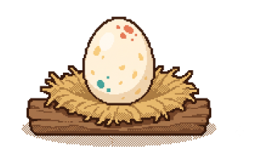
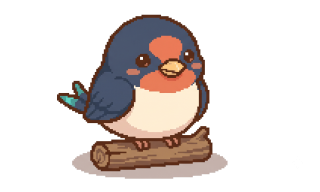
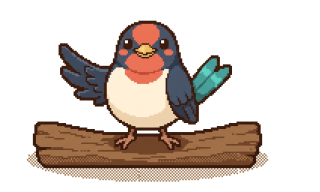
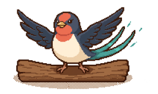

For Your Farm · UI 시안 v2 — 확정용
1차 시안 피드백을 반영했습니다. 색·간격·글자 크기는 앱의 기존 토큰 (이삭 골드 #F59E0B, 등급색 4종)을 그대로 씁니다.
2번(기록 탭 삭제)·3번(캐릭터)은 코드에 적용됐습니다. 나머지 1·4·5·6·7 항목은 아직 제안 상태라 "현재" 칸이 곧 지금 화면입니다.
"현재" 칸을 origin/dev 394fc81 실제 코드로 다시 그렸습니다. 아이콘·수치·순서를
기억으로 적었던 곳이 여러 군데 틀려 있었고, 제안 중 코드와 충돌하는 3건을 발견해
아래 ✕ 표시로 남겼습니다.
Gauge.tsx:46-49farm.module.css:526ChatPanel.tsx:268-314). 2번은 신규가 아니라 이사였고, 그래서 결국 이사도 안 하고 지웠습니다/history만 링크 없는 고아로 남아 있었습니다lib/pet.ts PET_IMAGE) — 다만 펫 코드로 키가 걸려 있어 단계별 그림에는 키를 바꿔야 했습니다 → STAGE_IMAGE로 교체 완료frontend/public/assets/pet/*.png) — 임시 SVG를 걷어냈습니다도넛의 호(arc) 길이가 점수를 그대로 보여주므로, 가운데 숫자는 같은 정보를 두 번 말하는 것입니다. 그 자리를 등급으로 바꾸면 "얼마나"와 "그래서 괜찮은가"를 한 번에 읽습니다.
dev 실측 — app/dashboard/page.tsx:125-166 FarmCard ·
components/ui/Gauge.tsx (viewBox 120, r=48, stroke 13, size 96, 가운데 숫자 + "적합도") ·
components/GradeBadge.tsx (S 매우 적합 / A 적합 / B 주의 / C 부적합) ·
작물 아이콘은 lucide TreeDeciduous·Sprout(과수/그 외), 이모지 아님.
카드 전체가 /farm/1 링크 — 버튼 없음
Gauge에 mode="grade" 한 갈래를 더하고, 점수 없음(value===null)이면 지금처럼 "—"로 둡니다<Link>라
그 안에 또 링크를 넣으면 중첩 인터랙티브(a 안의 a)가 됩니다 — HTML 위반이고
스크린리더가 두 번 읽습니다. 그 자리에 점수 13px을 넣었습니다card.score === null) — 이때는 등급도 없으니
기존 GradeBadge의 상태 문구("데이터 없음" 등)를 그대로 남겨야 합니다결론: 대화 기록으로 바꾸지 않고 탭을 지웠습니다. 행동기록은 유저가 직접 입력해야 하는데 그 화면을 만들 계획이 없어 영원히 빈 칸으로 남는 자리였습니다. 같은 약속을 화면마다 반복하고 지키지 않는 것이 "아직 준비 중"이라는 정직한 표기보다 나쁩니다. 아래 "대화 기록으로 대체" 안은 검토했지만 만들지 않았습니다 — 대화 전환은 이미 챗봇 안 드롭다운이 하고 있어서 새 화면이 벌어주는 것이 없었습니다.
삭제 전(dev 394fc81) — app/history/page.tsx (h1 "행동 기록" + "기록 타임라인" 준비 중 카드) ·
대시보드에도 준비 중 카드가 2개 더 있었음(page.tsx:243-250 행동 기록,
:263-270 최근 기록) ·
대화 목록은 이미 챗봇 안에 있음 — ChatPanel.tsx:268-314의 select + "+ 새 대화" + "삭제",
lib/chat.ts의 fetchChatSessions / switchChatSession / deleteChatSession.
밭에서 한 일과 시스템이 감지한 변화를 시간순으로 모아 보는 공간입니다.
제목·개수는 이미 서버가 줍니다. 다만 드롭다운을 열어야 보입니다.
/history 라우트(고아 페이지),
대시보드의 "행동 기록"(sp4)·"최근 기록"(sp5) 카드. /history는 이제 404입니다Navigation.tsx: 내 밭 / 상담 / 설정) /history는 아무 데서도 링크되지 않는
고아 라우트였습니다 — URL을 직접 치면 나오는 빈 껍데기EmptyState의 badge prop을 제거했습니다 —
유일한 사용처가 /history였습니다. 쓰는 곳 없는 prop은 다음 사람이
"준비 중 칸을 또 만들어도 된다"고 읽습니다(CSS .badge도 함께)title·message_count), 누르면 그 대화로 이어집니다
(openSession(sid)). 새 화면이 벌어주는 건 "훑어보기"뿐이었습니다ChatSessionSummary.updated_at도 불필요해졌습니다
이 항목은 로컬에 적용됐습니다(미커밋).
종전 백엔드에는 펫이 2종(새싹이·흙강아지)이고 유저가 골랐습니다.
캐릭터를 하나로 통일해 선택 기능을 통째로 지웠습니다 —
PUT /api/v1/pet·pets·changePet()·.petPick.
레벨 구간(Lv1/3/6/10)은 이미 4단계라 그대로 씁니다.
변경 전(dev 394fc81) — backend/app/services/quest_service.py:32-61:
퀘스트 단기탭 +10 · 장기탭 +10 · 질문 +20, EXP_PER_LEVEL = 100,
PET_STAGES = 씨앗(Lv1) 🌰🥚 / 새싹(Lv3) 🌱🐣 / 자람(Lv6) 🌿🐕 / 열매(Lv10) 🌻🐕🦺,
PETS = (("sprout","새싹이"),("pup","흙강아지")) ·
표시는 ChatPanel.tsx:242-262(펫 emoji + Lv.N · 단계),
선택 UI는 PetQuestBar.tsx:64-83 ·
일러스트 교체 지점 lib/pet.ts PET_IMAGE(비어 있음 → emoji 폴백).

Lv 1–2알 막 시작했어요egg

Lv 3–5아기 제비 알에서 깨어났어요chick

Lv 6–9어린 제비 날갯짓을 배워요fledgling

Lv 10+제비 함께 날아요swallow
단기 탭 +10 · 장기 탭 +10 · 질문하기 +20 → 100 경험치마다 1레벨 (하루 다 하면 40exp)
이름은 펫 이름(새싹이)이 나옵니다 — "텃밭이"는 게스트일 때만.
펫 바꾸기 줄이 사라집니다 — 고를 것이 없습니다.
이름은 아직 안 정했습니다. 제비는 한국 농가에서 실제로 의미가 있는 새라 (봄에 처마에 둥지 → 농사 시작 신호 / 해충을 잡아먹는 익조 / 흥부전에서 소식과 복을 물어다 줌) 그 결을 살린 후보를 뽑았습니다.
이름은 그대로 두고 생김새만 제비로. 챗봇 프롬프트·안내 문구가 전부 "텃밭이"라 이름을 바꾸면 프롬프트 버전을 올리고 재검증해야 합니다. 비용 0.
"강남 갔던 제비가 돌아온다" — 봄에 돌아오는 제비. 40~50대에게 즉시 통하는 관용구라 설명이 필요 없습니다.
날씨·위험을 미리 물어다 주는 역할이 곧 제품의 핵심(선제적 안내)입니다. 이름이 하는 일을 그대로 설명합니다.
군더더기 없이 종 이름 그대로. 다만 고유명사 느낌이 약해 "우리 제비"처럼 쓰이기 어렵습니다.
progress.pet.name이
"새싹이"였고 "텃밭이"는 게스트 폴백뿐이었습니다 →
PETS 튜플을 지우고 PET_NAME = "텃밭이" 한 줄로PUT /api/v1/pet,
PetChangeRequest, set_pet(), pet_of(), PETS/PET_CODES,
changePet(), PetOption, QuestProgress.pets,
.petPick/.petButton CSS. 순삭 −80줄PetState.code → PetState.stage_code(egg·chick·fledgling·swallow),
PET_IMAGE → STAGE_IMAGE. 단계 코드가 곧 파일명이라
어긋나면 테스트가 잡습니다(test_quest_progress.py).avatarImg·.questPetIcon의
border-radius:50%를 지웠습니다 — 원형으로 자르면 날개 편 단계가 잘립니다LAUNCHER_ICON) — 단계를 따라가려면 ChatDock이
퀘스트 진행도를 조회해야 해서 다음 작업으로 뺐습니다users.pet_code 컬럼이 죽었습니다.
아무도 안 읽지만 drop은 마이그레이션이 필요해 남겨뒀습니다(quest_service.py ponytail 주석)이 탭의 존재 이유는 "야간 저온 3일을 미리 몰라 활착에 실패했다"는 A씨 사례입니다 — 가장 급한 것이 가장 위에 와야 합니다. 날짜 카드의 점수는 도넛 등급으로 대체합니다.
dev 실측 — ShortTermPanel.tsx:188-210: 세로 스택이 아님.
.bento 안에 3일 예보 sp7 + 감지된 위험신호 sp5가 나란히, 행동추천이 sp12로 아래.
1080px 이하에서만 전부 1열이 됩니다 → v2가 말한 "위험이 예보 아래"는 모바일에서만 참 ·
날짜 카드(:102-154)는 등급 글자 + 20px 점수 + 생육단계 + 지표 3개
(낮 최고기온·야간 최저·강수) + "기온 변화 보기" 버튼 ·
위험 문구는 types/farm.ts의 describeRiskFlag()가 만듭니다.
일부 시간대만 반영
오늘 이렇게 하세요 자동 생성 문구
한낮 물주기는 피하고 아침·저녁 서늘할 때 관수하세요.
이 밭은 유기물이 권장 범위보다 낮습니다(시군 평균 기준).
오늘 이렇게 하세요 자동 생성 문구
한낮 물주기는 피하고 아침·저녁 서늘할 때 관수하세요.
이 밭은 유기물이 권장 범위보다 낮습니다(시군 평균 기준).
일부 시간대만 반영
Card span={7}/span={5}가
나란히 서므로 span을 12로 바꾸고 JSX 순서를 재배치하는 변경입니다(CSS만으로는 안 됩니다)describeRiskFlag()의 "낮 기온 허용범위 초과" 대신
"한낮이 너무 덥습니다 · 사과가 견디는 한계(31℃)를 넘습니다".
한계 수치(31℃)는 시드에서 옵니다(breakdown.temp_day.allowed_max) — 하드코딩 금지calmBanner). 이 문구는 남기는 게 맞습니다 — 없으면
"위험 판정이 돌았는지"를 알 수 없습니다<button>으로 만들 수 없습니다(안에 dl·ul이 있어
HTML 위반). 이름만 "시간별 날씨 보기"로 바꿨습니다기상청 API를 실제로 호출해 확인했습니다(2026-08-05 02시 발표, 순천 격자): 기온·하늘상태·강수형태·강수확률이 모두 1시간 간격으로 옵니다 — 오늘 21슬롯(발표 이후), 내일 24, 모레 24. 화면에 나오는 3일은 전부 1시간 단위가 가능합니다.
dev 실측 — DayDetailModal.tsx: 제목 + 등급 + N점 + 발표시각,
DayTempChart(시간별 기온 곡선 + 일최고 마커 + 일평균 기준선 + 결측 구간),
지표 4개(낮 최고기온·야간 최저·일 평균기온 "점수 기준"·강수), 주의 목록,
근거표 5열(지표·값·적정·허용·점수+상태태그) ·
시간별 기온은 이미 API에 있습니다 — day.hourly_temp. 없는 건 SKY·PTY·POP.
착과기 · 오늘 02시 발표 일부 시간대만 반영
| 지표 | 값 | 적정 | 허용 | 점수 |
|---|---|---|---|---|
| 낮 기온 | 31.3 | 20 ~ 26 | ~ 31 | 58높음 |
| 야간 최저기온 | 29.0 | 12 ~ 18 | ~ 22 | 41매우 높음 |
| 강수량 | 0.0 | 2 ~ 8 | ~ 30 | 72적음 |
착과기 · 오늘 02시 발표 · 64점
← 좌우로 넘겨 보세요 (21시간)
14시가 가장 덥습니다 (37℃) — 이 시간대 작업은 피하세요
| 지표 | 우리 밭 | 알맞은 범위 | 판정 |
|---|---|---|---|
| 낮 기온 | 31.3℃ | 20 ~ 26℃ | 높음 |
| 야간 최저기온 | 29.0℃ | 12 ~ 18℃ | 매우 높음 |
| 강수량 | 0.0mm | 2 ~ 8mm | 적음 |
DayTempChart도 이미 같은 일을 합니다(회색 구간)breakdown[*].status, 지금은 11px 배지)hourly_temp) — 아이콘·강수확률만 파서에 카테고리 3개 추가 + 컬럼 확장DayTempChart)을 스트립으로 갈아치우지 않습니다.
곡선은 "표시값(일최고) ≠ 채점값(일평균)"을 눈으로 보여주려고 만든 것입니다.
스트립을 위에 얹고 곡선은 근거 접기 안으로 옮기는 것을 권합니다화면마다 등급이 다르게 생기면 그때마다 새로 배워야 합니다. 대시보드·밭 상세·장기 탭이 전부 같은 도넛을 씁니다. 크기만 다릅니다.
dev 실측 — LongTermPanel.tsx:32-55 MonthCell: 월 + Gauge size=88 +
GradeBadge + 생육단계 + "전망 반영" 태그(outlook_applied일 때만) ·
최고점 달은 테두리색만(.moBest) ·
히트맵 위에 "앞으로 3개월, 이렇게 준비하세요" 카드, 아래에 "주의가 필요한 시기" 카드가 있습니다.
Gauge·같은 등급 문구를 쓰므로 1번의 mode="grade" 한 갈래로
세 화면이 동시에 바뀝니다(파일 1개 수정 + 호출부 3곳)노안이 시작되는 연령대에서 가장 먼저 안 읽히는 건 작고 흐린 회색 글씨입니다. 토큰은 이미 본문 18px / 보조 16px로 정해져 있는데, 모듈 CSS가 그걸 안 씁니다.
dev 실측 — frontend/{components,app}/**/*.css의 font-size 분포:
14px 22곳 · 13px 22곳 · 12px 8곳 · 11px 8곳 · 12.5px 1곳 · 10px 1곳.
반면 --fs-body:18px를 쓰는 곳은 body와 몇 군데뿐입니다 —
토큰이 있는데 안 쓰이는 것이 문제의 정체입니다.
(farm.module.css:22 .notice 14px, :64 .hint 12px,
DayDetailModal.module.css:132 상태 배지 11px)
var(--fs-sub)·새 --fs-meta:15px로 치환. 44곳이지만 기계적 치환입니다.dayMore는 ::after로 카드 전체가 클릭영역이라 이미 넉넉합니다.
좁은 건 .petButton·.sessionButton(패딩 6~9px)입니다PETS를 지우고
PET_NAME = "텃밭이" 한 줄로. 단계명은 알 · 아기 제비 · 어린 제비 · 제비,
레벨 경계(1/3/6/10)는 그대로. 펫 선택(PUT /api/v1/pet·pets·changePet·
.petPick)은 전부 삭제했습니다./history 라우트 + 대시보드 준비 중 카드 2개
+ EmptyState.badge까지 제거. 대화 전환은 챗봇 안 드롭다운이 계속 맡습니다.ChatSessionSummary.updated_at 추가도 불필요.
위 그림은 실제 앱 자산입니다(frontend/public/assets/pet/*.png) —
흰 배경을 알파로 빼고 네 장을 같은 프레임·같은 배율(320×192)로 맞췄습니다.
단계 코드 ↔ 파일명은 backend/tests/test_quest_progress.py가 검증합니다.